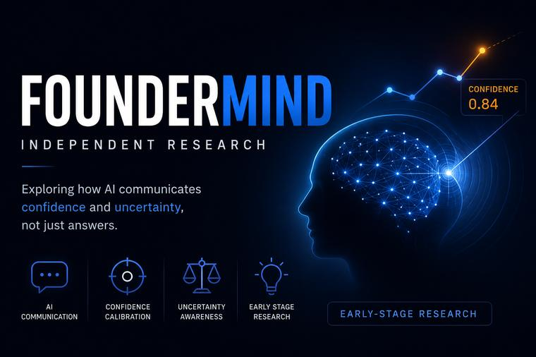

MOD A-01 · IN PROGRESS
FounderMind — Independent Research
An early-stage independent research project asking how AI should communicate confidence and uncertainty, not just answers. Right now I'm in the paper-study phase — reading work on calibrated verbalized confidence (Mündler et al.) and trust calibration — and sketching the first ideas. No results yet; I'm sharing the journey as it unfolds.